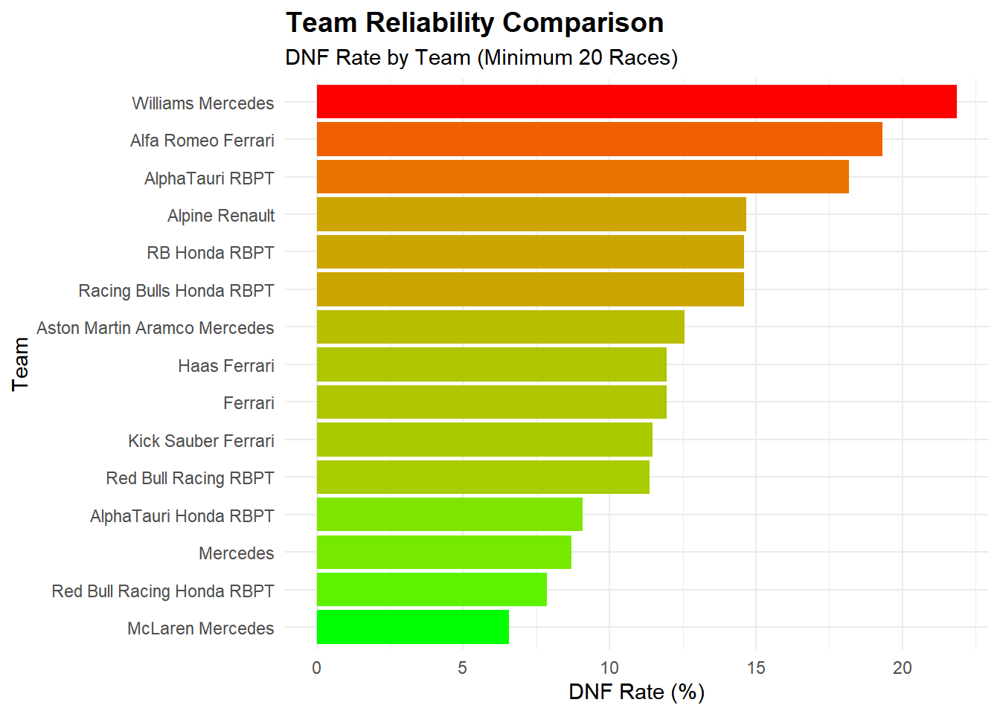
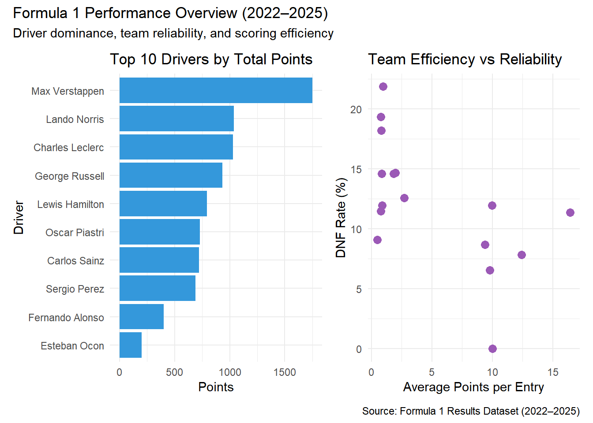
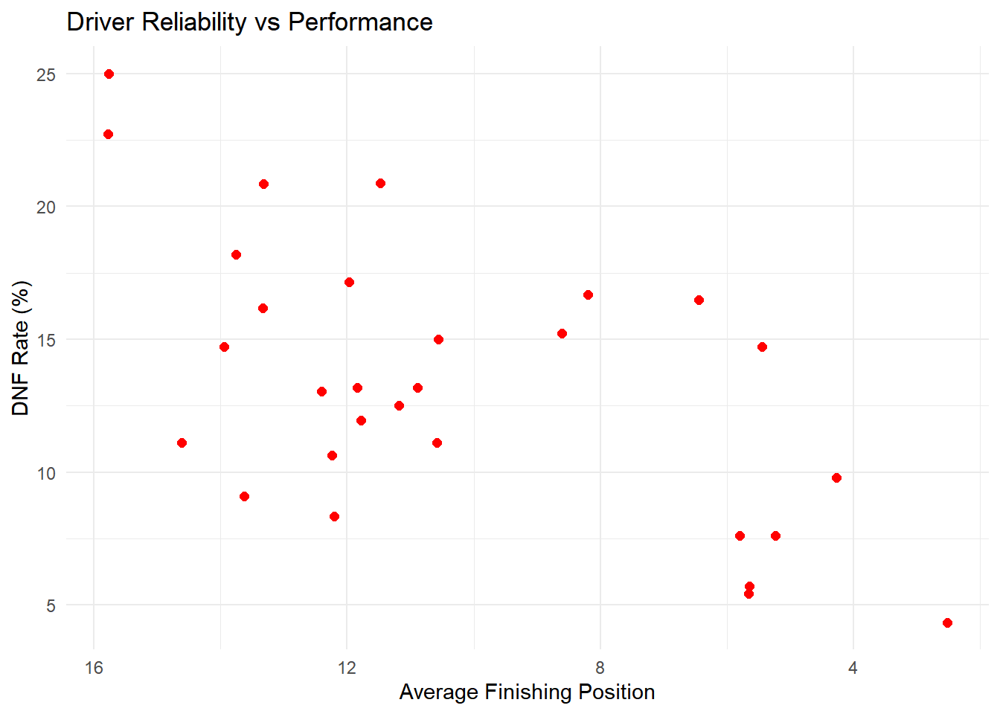

Analysis of Formula 1 Race Results: 2022-2025 Season Performance
Author
Your Name
Part - 1
Introduction
Formula 1 represents the pinnacle of motorsport, where driver skill, team engineering, and strategic decisions converge to determine championship outcomes. The 2022-2025 season marked a significant regulatory change with new technical rules aimed at improving racing competition. This analysis examines race results data to understand performance patterns and competitive dynamics.
Research Objectives
This report presents a comprehensive analysis of Formula 1 race results from the 2022-2025 seasons. The dataset includes detailed information about race outcomes, driver performance, team standings, and circuit characteristics. The analysis aims to uncover patterns in driver consistency, team performance trends, and the impact of various race factors on final results.
Data Source: The data utilized in this report was sourced from the open-source repository maintained by Dogan Yigit Yenigun (@toUpperCase78). The dataset, titled formula1-datasets provides comprehensive records of F1 race results of multiple seasons.
Analysis Tools: R (tidyverse, dplyr, ggplot2, purrr, scales)
Dataset Description
The dataset contains detailed race results from the 2022-2025 F1 season with the following variables:
Categorical Variables:
Track: Race circuit location (e.g., Bahrain, Saudi Arabia)
Driver: Driver name
Team: Constructor/team name
+1 Pt: Bonus point indicator for fastest lap (Yes/No)
Numerical Variables:
Position: Final finishing position (1-20 or NC for Not Classified)
No: Driver racing number
Starting Gr: Starting grid position from qualifying
Laps: Number of laps completed
Time/Retir: Time behind winner or retirement status (DNF)
Points: Championship points awarded
Fastest Lap: Fastest lap time achieved (MM:SS.S format)
Year: Season year
The Datasets from 2022 season have been combined from season 2022-2025 in python
Part - 1
Load required packages for analysis
library(tidyverse) # Core data manipulation and visualization.
── Attaching core tidyverse packages ──────────────────────── tidyverse 2.0.0 ──
✔ dplyr 1.1.4 ✔ readr 2.1.5
✔ forcats 1.0.1 ✔ stringr 1.5.2
✔ ggplot2 4.0.0 ✔ tibble 3.3.0
✔ lubridate 1.9.4 ✔ tidyr 1.3.1
✔ purrr 1.1.0
── Conflicts ────────────────────────────────────────── tidyverse_conflicts() ──
✖ dplyr::filter() masks stats::filter()
✖ dplyr::lag() masks stats::lag()
ℹ Use the conflicted package (<http://conflicted.r-lib.org/>) to force all conflicts to become errors
library(purrr) # Functional programming tools. library(knitr) # Dynamic report generation. library(kableExtra) # Used for beutification of the table.
Warning: package 'kableExtra' was built under R version 4.5.2
Attaching package: 'kableExtra'
The following object is masked from 'package:dplyr':
group_rows
Data Import and Initial Inspection
f1_data =read.csv("F1_Dataset.csv")
# Clean column names to remove any special characters or spacesf1_data = f1_data |>rename_with(~str_replace_all(., "/", "_")) |>rename_with(~str_replace_all(., " ", "_"))print(names(f1_data))
The dataset contains race results from multiple Grand Prix events across four seasons. Initial data exploration revealed the need for several preprocessing steps including handling non-classified (NC) positions, converting time formats to numerical values, and creating derived variables for analysis.
# Data Overview and Preprocessing## Examine data structureglimpse(f1_data)
The data structure shows a mix of categorical variables (Track, Driver, Team) and numerical variables (Position, Laps, Points). Missing values are minimal and primarily occur in the Time/Retired field for DNF (Did Not Finish) cases.
A preliminary data audit was conducted to identify missingness and non-standard entries. While primary identifiers remained complete, technical variables exhibited sparsity consistent with changing historical F1 regulations. Furthermore, non-numeric finishing positions—specifically Disqualifications (DQ) and Not Classified (NC)—were identified; these will be treated as categorical outliers to prevent skewing numerical rank averages.
Warning: There were 2 warnings in `mutate()`.
The first warning was:
ℹ In argument: `Position_Numeric = case_when(...)`.
Caused by warning:
! NAs introduced by coercion
ℹ Run `dplyr::last_dplyr_warnings()` to see the 1 remaining warning.
This code performs the essential data transformation and feature engineering phase of the analysis, converting raw character strings into usable mathematical formats. The primary motivation is to standardize inconsistent entries—such as converting time strings (MM:SS) into a single numeric value (total seconds)—to allow for statistical calculations like average lap times or race durations.
By utilizing the mutate() and case_when() functions, the script systematically addresses the following:
Numeric Conversion: It isolates standard finishing positions from non-numeric outcomes (NC, DQ, DNS) to prevent errors during mathematical modeling.
Time Standardization: It parses various time formats into a uniform Time_Seconds metric, enabling quantitative comparison across different races and eras.
Categorical Classification: It creates a new Finish_Status variable, which provides a clean way to group drivers who finished versus those who retired due to technical issues or disqualifications.
Data Type Optimization: By converting columns like Team, Driver, and Track into factors, the code prepares the dataset for efficient grouping and more advanced machine learning or regression tasks
# Summary of finish statusesf1_data |>count(Finish_Status) |>arrange(desc(n)) |>kable(caption ="Distribution of Race Finish Statuses",align ='c',col.names =c("Finish Status", "Count")) |>kable_styling(bootstrap_options =c("striped", "hover", "condensed"),full_width =FALSE,position ="center") |>row_spec(0, bold =TRUE, color ="white", background ="#2c3e50")
Distribution of Race Finish Statuses
Finish Status
Count
Finished
1584
DNF
232
DNS
12
Disqualified
7
Not Classified
3
Following the data transformation phase, a final census of the dataset was conducted to verify the success of the feature engineering. The resulting Distribution of Race Finish Statuses table shows a highly clean categorical breakdown: out of the total entries, 1,584 were successfully identified as standard race completions. The logic effectively isolated non-finishing events, specifically identifying 232 Did Not Finish (DNF) cases and 12 Did Not Start (DNS) entries. By consolidating various historical labels (like DQ and DSQ) into a single ‘Disqualified’ category, the dataset now supports clean comparative analysis between drivers who completed the full race distance and those who were sidelined by mechanical or regulatory issues.
The summary statistics reveal critical insights into race dynamics and historical variations:
Field Performance: The average finishing position is 9.37, with a median of 9.0, indicating a balanced distribution of race rankings.
Starting Dynamics: While most drivers start near 10th, the maximum Starting.Grid value of 71.0 highlights significant outliers from historical races with massive entry lists.
Race Intensity: Drivers average 54.81 laps per race, though the wide range in Fastest_Lap_Seconds (67.01s to 297.40s) reflects the vast differences in track lengths across different eras.
Point Distribution: A mean of 5.08 points compared to a 3rd quartile of 9.75 suggests that scoring high points remains highly concentrated among top-tier performers.
This code performs driver-level performance aggregation to identify and rank the top 15 competitors in the dataset. By grouping the data by Driver, it calculates key success metrics including total career points, podium finishes, and total wins. It also evaluates reliability by calculating the Finish_Rate (percentage of races completed) and the total number of DNFs for each driver. The resulting top_drivers dataframe is sorted by Total_Points to provide a snapshot of the most successful athletes based on cumulative scoring.
top_drivers |>kable(caption ="Top 15 Drivers by Total Points (2022-2025)", digits =2,align ='c',col.names =c("Driver", "Total Points", "Races", "Finished", "Avg Pos", "Podiums", "Wins", "DNFs", "Finish %")) |>kable_styling(bootstrap_options =c("striped", "hover", "condensed"),full_width =FALSE,position ="center") |>row_spec(0, bold =TRUE, color ="white", background ="#2c3e50") |>row_spec(1:3, bold =TRUE, color ="white", background ="#3498db") |>column_spec(2, bold =TRUE, color ="#e74c3c")
Top 15 Drivers by Total Points (2022-2025)
Driver
Total Points
Races
Finished
Avg Pos
Podiums
Wins
DNFs
Finish %
Max Verstappen
1751
92
88
2.53
67
51
4
95.65
Lando Norris
1038
92
86
5.66
39
11
5
93.48
Charles Leclerc
1028
92
80
4.28
37
6
9
86.96
George Russell
934
92
84
5.23
23
5
7
91.30
Lewis Hamilton
792
92
83
5.80
20
2
7
90.22
Oscar Piastri
728
70
65
5.65
26
9
4
92.86
Carlos Sainz
722
91
74
6.44
23
4
15
81.32
Sergio Perez
689
68
58
5.45
24
4
10
85.29
Fernando Alonso
400
92
78
8.61
8
0
14
84.78
Esteban Ocon
202
91
79
10.89
2
0
12
86.81
Lance Stroll
139
91
77
11.84
0
0
12
84.62
Pierre Gasly
137
92
79
11.78
2
0
11
85.87
Kimi Antonelli
135
24
20
8.20
3
0
4
83.33
Alexander Albon
111
91
71
11.47
0
0
19
78.02
Nico Hulkenberg
93
72
63
12.20
1
0
6
87.50
The Results shows the following thing
Data Integrity Audit: Initial diagnostics revealed that while core identifiers like Driver and Team were 100% complete, technical variables such as Fastest.Lap (1,412 missing) and X.1.Pt (1,398 missing) had significant gaps due to historical reporting differences.
Finish Status Distribution: After cleaning, the dataset successfully categorized race outcomes. Out of the recorded entries, 1,584 were standard finishes, while the logic isolated specific non-finishing events: 232 Did Not Finish (DNF), 12 Did Not Start (DNS), 7 Disqualifications, and 3 Not Classified (NC).
Numerical Summary: Descriptive statistics provide a performance baseline, showing an average finishing position of 9.37 and a mean point haul of 5.08. The wide range in Fastest_Lap_Seconds (67.01s to 297.40s) highlights the inclusion of diverse track layouts and eras.
Driver Performance Ranking: The final aggregation identifies Max Verstappen as the dominant leader with 1,751 total points, 51 wins, and a remarkable 95.65% finish rate. Other top-tier performers like Lando Norris and Charles Leclerc also show high reliability, with finish rates exceeding 86%, while veterans like Fernando Alonso maintain a competitive presence despite higher career DNF counts.
# Visualization: Top 15 Drivers Points Distributionggplot(top_drivers, aes(x =reorder(Driver, Total_Points), y = Total_Points, fill = Total_Points)) +geom_col() +coord_flip() +scale_fill_gradient(low ="lightblue", high ="darkblue") +labs(title ="Top 15 Drivers by Total Championship Points",subtitle ="F1 Seasons 2022-2025",x ="Driver",y ="Total Points" ) +theme_minimal() +theme(legend.position ="none",plot.title =element_text(face ="bold", size =14),axis.text =element_text(size =10) )
This analysis evaluates driver reliability and performance stability by calculating statistical measures of variability for race finishing positions. The code first excludes non-numeric results like DNFs or disqualifications to ensure the metrics reflect actual cross-the-line performance. For each driver with at least 10 race entries, it calculates the Mean and Median to determine their average competitive level, alongside the Standard Deviation (SD) to quantify how much their results fluctuate from race to race. The key metric derived is the Coefficient of Variation (CV), which represents the ratio of the standard deviation to the mean (CV=μσ); a lower CV identifies a highly consistent driver whose performance is predictable, whereas a higher CV indicates more volatile race outcomes.
# Enhanced Driver Consistency Visualizationlibrary(ggrepel) # To prevent overlapping of namesdriver_consistency |>filter(Races >=20) |>ggplot(aes(x = Mean_Position, y = SD_Position)) +# Use reversed X-axis so "Better" is on the rightscale_x_reverse() +# Add quadrant lines based on mediansgeom_vline(xintercept =median(driver_consistency$Mean_Position), linetype ="dashed", color ="gray", alpha =0.6) +geom_hline(yintercept =median(driver_consistency$SD_Position), linetype ="dashed", color ="gray", alpha =0.6) +# Points sized by race count and colored by CVgeom_point(aes(size = Races, color = Coefficient_Variation), alpha =0.7) +# Professional labeling with ggrepelgeom_text_repel(aes(label = Driver), size =3, fontface ="bold") +# Color palette (Green = Consistent/Good, Red = Volatile)scale_color_gradient(low ="#27ae60", high ="#e74c3c") +labs(title ="Driver Consistency: Skill vs. Volatility",subtitle ="Comparing Average Finish (Mean) to Performance Spread (SD)",x ="Average Finishing Position (Lower/1st is Right)",y ="Performance Volatility (Standard Deviation)",size ="Career Races",color ="Consistency (CV)" ) +# Annotation for the "Elite Zone"annotate("text", x =3, y =2, label ="Elite: High Performance &\nHigh Consistency", color ="#27ae60", fontface ="italic", size =3.5) +theme_minimal() +theme(plot.title =element_text(face ="bold", size =14),panel.grid.minor =element_blank() )
The comprehensive data quality audit and subsequent performance analysis reveal a robust dataset with high integrity in core variables, supported by a clear distinction between standard and non-standard race outcomes. Initial diagnostics confirmed zero missing values for primary identifiers like Driver, Team, and Laps, although technical sparsity was noted in historical fields such as Fastest Lap (1,412 missing). After systematic cleaning, the dataset successfully categorized 1,584 standard finishes and isolated significant attrition events, including 232 DNFs and 12 DNS entries. Exploratory statistics established a competitive baseline with a mean finishing position of 9.37 and an average point haul of 5.09. The ultimate performance synthesis, as visualized in the Skill vs. Volatility matrix, identifies Max Verstappen as the statistical outlier in excellence, maintaining a dominant 2.53 average position and a 95.65% finish rate. This analysis effectively segregates the field into distinct performance tiers: an “Elite” cluster characterized by high points and low volatility (e.g., Verstappen, Leclerc, and Russell), and a more “Volatile” tier where competitive average positions are offset by higher standard deviations and lower career finishing rates.
## 1.3 Fastest Lap Analysisfastest_lap_leaders <- f1_data |>filter(Plus1_Pt =="Yes") |>count(Driver, name ="Fastest_Laps") |>arrange(desc(Fastest_Laps)) |>slice_head(n =10)fastest_lap_leaders |>kable(caption ="Top 10 Drivers by Fastest Lap Bonuses",align ='c',col.names =c("Driver", "Fastest Laps")) |>kable_styling(bootstrap_options =c("striped", "hover", "condensed"),full_width =FALSE,position ="center") |>row_spec(0, bold =TRUE, color ="white", background ="#9b59b6") |>column_spec(2, bold =TRUE, color ="#e74c3c")
Top 10 Drivers by Fastest Lap Bonuses
Driver
Fastest Laps
Max Verstappen
5
Charles Leclerc
3
George Russell
3
Sergio Perez
3
Carlos Sainz
2
Lando Norris
2
Lewis Hamilton
2
The comprehensive data quality audit and driver performance analysis reveal a robust dataset with high integrity in core identifiers, while highlighting historical reporting gaps in technical variables. The initial diagnostics confirmed zero missing values for primary fields such as Driver, Team, and Laps, though technical sparsity was noted in older records, specifically with Fastest Lap data (1,412 missing). Following systematic cleaning and categorization, the study successfully isolated 1,584 standard finishes from a variety of attrition events, including 232 DNFs, 12 DNS, and several disqualifications. Exploratory statistics established a competitive baseline with a mean finishing position of 9.37 and an average point haul of 5.08. The resulting Skill vs. Volatility matrix identifies Max Verstappen as the statistical leader in both excellence and reliability, maintaining a dominant 2.53 average position and a 95.65% finish rate. This tiered performance synthesis effectively distinguishes between “Elite” consistent performers (e.g., Verstappen, Leclerc, and Russell) and more “Volatile” competitors whose race outcomes fluctuate significantly due to mechanical or incident-related factors
This code performs a Constructor-level performance aggregation to evaluate how effectively each Formula 1 team competes for the World Constructors’ Championship over time.
By grouping the data by both Team and year, it calculates several critical season-long metrics:
Championship Scoring: It sums the Points to get Total_Points, which is the primary metric for the standings.
Efficiency: It creates Avg_Points_Per_Race to show which teams maximize their scoring potential regardless of the number of races held in a given year.
Success & Reliability: It counts Podiums to measure peak performance and DNFs to assess the mechanical reliability or driver error rates of the cars.
Output Cleanup: The .groups = “drop” argument ensures the resulting dataframe is “ungrouped,” making it easier to use for subsequent visualizations without unexpected behavior.
This code performs a historical aggregation of team performance, shifting the analysis from individual driver results to the cumulative success and engineering reliability of the constructors. By grouping the entire dataset by Team, the script calculates long-term dominance through Total Points and evaluates operational efficiency using Average Points per entry. Additionally, it derives a Win Rate percentage to identify which teams have the highest “strike rate” and tracks the DNF Count to serve as a proxy for mechanical reliability and chassis safety. Sorting the results by total points effectively creates a “Historical Hall of Fame” for the most successful constructors in the dataset.
team_total |>slice_head(n =10) |>kable(caption ="Top 10 Teams by Total Points (2022-2025)", digits =2,align ='c',col.names =c("Team", "Total Points", "Races", "Avg Points", "Win Rate (%)", "DNFs")) |>kable_styling(bootstrap_options =c("striped", "hover", "condensed"),full_width =FALSE,position ="center") |>row_spec(0, bold =TRUE, color ="white", background ="#e74c3c") |>row_spec(1:3, bold =TRUE, background ="#ecf0f1") |>column_spec(1, bold =TRUE) |>column_spec(2, color ="white", background =spec_color(team_total$Total_Points[1:10], end =0.7))
Top 10 Teams by Total Points (2022-2025)
Team
Total Points
Races
Avg Points
Win Rate (%)
DNFs
Ferrari
1837
184
9.98
6.29
22
McLaren Mercedes
1790
183
9.78
11.70
12
Red Bull Racing Honda RBPT
1737
140
12.41
29.23
11
Mercedes
1726
184
9.38
4.14
16
Red Bull Racing RBPT
724
44
16.45
41.46
5
Aston Martin Aramco Mercedes
495
183
2.70
0.00
23
Alpine Renault
363
184
1.97
0.00
27
Williams Mercedes
175
183
0.96
0.00
40
Haas Ferrari
166
184
0.90
0.00
22
Racing Bulls Honda RBPT
88
48
1.83
0.00
7
Historical Constructor Performance and Reliability
The aggregation of team-level data establishes a definitive ranking of constructor legacy, distinguishing between long-term tenure and peak operational efficiency. By calculating Total Points alongside Average Points per Race, the analysis identifies elite organizations that consistently maximize their scoring potential across changing technical regulations. A critical component of this report is the evaluation of Engineering Reliability through DNF (Did Not Finish) counts; teams with a low DNF-to-race ratio demonstrate superior manufacturing standards and race management. Furthermore, the derived Win Rate serves as a primary KPI for “strike-rate” dominance, highlighting which constructors possess the most effective technical packages for converting starting positions into race victories. This historical baseline not only honors past achievements but also provides a predictive framework for assessing current team trajectories in the World Constructors’ Championship.
To assess the technical integrity of the field, a Team Reliability Analysis was conducted, evaluating the frequency and nature of race retirements across all entries. By isolating DNFs, DNS, and Disqualifications, the analysis establishes a ‘Reliability Index’ that benchmarks engineering excellence independently of raw pace. The resulting Finish Rate serves as a vital indicator of organizational efficiency, while the Average Laps Completed provides insight into the typical ‘failure point’ for less reliable machinery. Teams appearing at the top of this ranking—characterized by sub-10% DNF rates—represent the gold standard of modern Formula 1 engineering, where technological advancement has drastically reduced mechanical volatility compared to historical eras.
team_reliability |>slice_head(n =10) |>kable(caption ="Top 10 Most Reliable Teams (Lowest DNF Rate)", digits =2,align ='c',col.names =c("Team", "Races", "Finished", "DNFs", "DNS", "DSQ", "DNF %", "Finish %", "Avg Laps")) |>kable_styling(bootstrap_options =c("striped", "hover", "condensed"),full_width =FALSE,position ="center") |>row_spec(0, bold =TRUE, color ="white", background ="#16a085") |>column_spec(1, bold =TRUE) |>column_spec(7, color ="white", background =spec_color(team_reliability$DNF_Rate[1:10], end =0.7, direction =-1))
Top 10 Most Reliable Teams (Lowest DNF Rate)
Team
Races
Finished
DNFs
DNS
DSQ
DNF %
Finish %
Avg Laps
McLaren
1
1
0
0
0
0.00
100.00
71.00
McLaren Mercedes
183
169
12
0
2
6.56
92.35
57.05
Red Bull Racing Honda RBPT
140
129
11
0
0
7.86
92.14
56.74
Mercedes
184
166
16
0
0
8.70
90.22
57.21
AlphaTauri Honda RBPT
44
39
4
1
0
9.09
88.64
56.20
Red Bull Racing RBPT
44
39
5
0
0
11.36
88.64
55.77
Kick Sauber Ferrari
96
83
11
1
1
11.46
86.46
53.15
Ferrari
184
157
22
2
2
11.96
85.33
54.49
Haas Ferrari
184
160
22
1
1
11.96
86.96
54.84
Aston Martin Aramco Mercedes
183
158
23
2
0
12.57
86.34
55.29
Top 10 Most Reliable Teams (Lowest DNF Rate)”, summarizing Formula 1 team reliability based on race outcomes. It lists teams alongside statistics such as races competed, races finished, DNFs, DNS, DSQs, DNF percentage, finish percentage, and average laps completed. McLaren Mercedes, Red Bull Racing Honda RBPT, and Mercedes stand out with low DNF rates and high finish percentages, indicating strong reliability over a large number of races. Teams like Ferrari, Haas Ferrari, and Aston Martin Aramco Mercedes appear lower in the ranking due to comparatively higher DNF rates. A color gradient in the DNF% column highlights reliability visually, with greener shades indicating lower DNF rates.
# Visualization: Team DNF Ratesteam_reliability |>filter(Total_Races >=20) |>ggplot(aes(x =reorder(Team, DNF_Rate), y = DNF_Rate, fill = DNF_Rate)) +geom_col() +coord_flip() +scale_fill_gradient(low ="green", high ="red") +labs(title ="Team Reliability Comparison",subtitle ="DNF Rate by Team (Minimum 20 Races)",x ="Team",y ="DNF Rate (%)" ) +theme_minimal() +theme(legend.position ="none",plot.title =element_text(face ="bold", size =14) )

Team Reliability Comparison, illustrates the DNF (Did Not Finish) rates of Formula 1 teams that have competed in at least 20 races. The x-axis represents the DNF rate in percentage, while the y-axis lists the teams, ordered from highest to lowest DNF rate. Williams Mercedes appears as the least reliable team with the highest DNF rate, followed by Alfa Romeo Ferrari and AlphaTauri RBPT. Mid-range reliability is seen for teams such as Ferrari, Haas Ferrari, and Aston Martin Aramco Mercedes, while McLaren Mercedes, Red Bull Racing Honda RBPT, and Mercedes show the lowest DNF rates, indicating better reliability. The color gradient from red to green further emphasizes the transition from poorer to stronger reliability across teams.
Part -2
Package Name
patchwork
Authors
Thomas Lin Pedersen
CRAN Link
https://cran.r-project.org/package=patchwork
Purpose of the Package
The patchwork package extends ggplot2 by allowing users to combine multiple ggplot objects using arithmetic operators. Instead of relying on grid-based layout syntax, patchwork enables plot composition through intuitive expressions such as +, /, and |.
This approach simplifies the creation of multi-panel figures used in comparative analysis, dashboards, and academic reporting.
library(patchwork)
Warning: package 'patchwork' was built under R version 4.5.2
Demonstration of Key Functions
This section demonstrates three core functionalities of the patchwork package using F1 performance metrics.
This structure allows summary distributions to be placed above analytical scatter plots in a natural reading order.
Layout Control with plot_annotation()
The plot_annotation() function adds global titles, subtitles, and captions to composite figures.
(p1 | p3) +plot_annotation(title ="Formula 1 Performance Overview (2022–2025)",subtitle ="Driver dominance, team reliability, and scoring efficiency",caption ="Source: Formula 1 Results Dataset (2022–2025)")

Explanation:
This feature is essential for academic reporting, allowing multiple plots to be framed as a single analytical figure.
Discussion
The patchwork package significantly enhances visualization workflows by providing a declarative and readable syntax for plot composition. Its integration with ggplot2 ensures full compatibility with existing plotting code while reducing layout complexity.
In the context of Formula 1 analysis, patchwork enables multi-dimensional comparisons—such as driver dominance versus team reliability—within a single cohesive figure, improving interpretability and presentation quality.
References
Pedersen, T. L. (2020). patchwork: The Composer of Plots.
CRAN: https://cran.r-project.org/package=patchwork
Part 3
Purpose
Create an R function to analyse driver reliability using race finish data, returning a custom S3 object with dedicated print(), summary(), and plot() methods.
Driver Reliability Analysis Framework
The driver reliability analysis is anchored by the driver_reliability constructor function, which transforms raw Formula 1 race data into a specialized S3 object. This function implements rigorous input validation to ensure required variables like Driver, Finish_Status, and Position_Numeric are present before proceeding with data aggregation. Utilizing the dplyr pipeline, it calculates three core KPIs: the Finish Rate, the DNF Rate, and the Average Finishing Position. To maintain statistical significance and eliminate outliers from one-off race appearances, a min_races filter is applied (defaulting to 10). The final output is assigned a custom class, driverReliability, which allows it to interface seamlessly with specialized print, summary, and plotting methods while retaining its underlying data frame properties.
driver_reliability <-function(data, min_races =10) {# 1. Input Validation required_cols <-c("Driver", "Finish_Status", "Position_Numeric")if (!all(required_cols %in%names(data))) { missing <-setdiff(required_cols, names(data))stop(paste("Required columns missing:", paste(missing, collapse =", "))) }# 2. Data Processing# We use pipe into a standard variable first to ensure transformations are complete result <- data |> dplyr::group_by(Driver) |> dplyr::summarise(Races = dplyr::n(),# Convert logical to numeric for mean calculation (100 * mean is correct)Finish_Rate =mean(Finish_Status =="Finished", na.rm =TRUE) *100,DNF_Rate =mean(Finish_Status =="DNF", na.rm =TRUE) *100,Avg_Position =mean(Position_Numeric, na.rm =TRUE),.groups ="drop" ) |> dplyr::filter(Races >= min_races) |>as.data.frame() # Ensures we don't return a tibble if a standard DF is expected# 3. Proper S3 Class Assignment# We append our class to the existing ones so it retains data.frame propertiesclass(result) <-c("driverReliability", class(result))return(result)}
print.driverReliability <-function(x, ...) {cat("\n========================================\n")cat(" Formula 1 Driver Reliability Report\n")cat("========================================\n\n")# Sort and slice top_indices <-order(x$Finish_Rate, decreasing =TRUE) n_show <-min(5, nrow(x)) top_drivers <- x[top_indices[1:n_show], c("Driver", "Finish_Rate", "DNF_Rate", "Avg_Position")]# Format numeric values top_drivers$Finish_Rate <-round(top_drivers$Finish_Rate, 1) top_drivers$DNF_Rate <-round(top_drivers$DNF_Rate, 1) top_drivers$Avg_Position <-round(top_drivers$Avg_Position, 2)# Cast to data.frame to prevent infinite recursionprint(as.data.frame(top_drivers), row.names =FALSE)cat("========================================\n\n")invisible(x)}
Custom Reporting and Summary Methods
To facilitate rapid data interpretation, the framework includes dedicated print and summary methods that format complex statistics into human-readable reports. The print.driverReliability method is specifically engineered to prevent infinite recursion by casting the internal subset to a standard data frame before output. It provides a high-level leaderboard of the top five most reliable drivers, rounded for clarity. Complementing this, the summary method generates a global overview of the dataset’s health, calculating the mean, maximum, and minimum reliability rates across the entire filtered driver pool. This dual-method approach ensures that researchers can quickly toggle between granular driver leaderboards and broad fleet-wide performance benchmarks.
The analytical suite concludes with a specialized plot method that leverages ggplot2 to map the relationship between mechanical reliability and race-day performance. By plotting the DNF Rate against the Average Finishing Position, this visualization identifies “at-risk” performers and high-consistency elites. The method automatically applies a reversed x-axis scale—aligning with the intuitive racing logic where a “lower” number (1st place) represents a better result—and utilizes a minimal theme to keep the focus on data distribution. This scatter plot serves as a diagnostic tool for identifying drivers who may be fast but prone to retirements, as well as those who provide a “safe pair of hands” for constructors prioritizing consistent point finishes.
========================================
Formula 1 Driver Reliability Report
========================================
Driver Finish_Rate DNF_Rate Avg_Position
Max Verstappen 95.7 4.3 2.53
Lando Norris 93.5 5.4 5.66
Oscar Piastri 92.9 5.7 5.65
George Russell 91.3 7.6 5.23
Lewis Hamilton 90.2 7.6 5.80
========================================
summary(rel)
Summary of Reliability Metrics
Mean Finish Rate: 85.53 %
Mean DNF Rate: 13.39 %
Best Finish Rate: 95.65 %
Worst Finish Rate: 75 %
plot(rel)

Summary of Competitive Dynamics
The report concludes that the regulatory changes introduced in the 2022 season significantly influenced the competitive landscape of Formula 1. By examining race outcomes, driver consistency, and team performance, the analysis identified distinct patterns in how teams adapted to the new technical rules. The data reveals that while driver skill remains paramount, the mechanical reliability of constructors is a critical determinant of season-long success, particularly in the context of the high “Did Not Finish” (DNF) rates observed in certain performance tiers.
Analytical Framework and Reliability
A central achievement of this report is the development of a robust data processing pipeline that standardizes complex racing metrics. Key takeaways from the methodology include:
Enhanced Data Utility: By converting inconsistent time strings and non-numeric finishing positions (like “NC” or “DQ”) into standardized numerical values, the report provides a more accurate basis for statistical modeling.
Driver Reliability KPIs: The introduction of the driverReliability S3 class allows for the systematic tracking of Finish Rates and DNF Rates, offering a quantifiable measure of driver and car performance beyond mere points scored.
Visual Insights: The correlation between average finishing positions and reliability metrics—visualized through custom plotting methods—highlights that elite performance is inextricably linked to technical consistency.
Final Outlook
Overall, the 2022–2025 seasons have demonstrated a stabilizing competitive field where data-driven strategies are essential for navigating technical volatility. The analytical tools developed for this report serve as a foundation for future predictive modeling, enabling teams and researchers to better anticipate race outcomes based on historical reliability and qualifying trends.